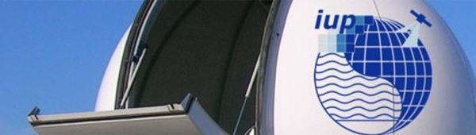

Das Institut für Umweltphysik an der Universität Bremen umfasst die Bereiche Ozeanographie, Physik und Chemie der Atmosphäre und Fernerkundung. Dabei werden Methoden zur Auswertung von Daten entwickelt und sowohl Daten aus der Feldforschung z.B. Reisen von Forschungsschiffen als auch Satellitendaten ausgewertet um ein besseres Verständnis über die Meere der Erde, die Verteilung von Gasen in der Atmosphäre und die Zusammenhänge im Klimasystem zu erhalten.
